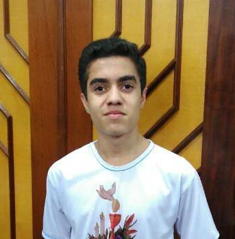

17 anos, solteiro, natural de Franca, São Paulo

Quando capaz, finja ser incapaz;
quando pronto, finja estar despreparado;
quando próximo, finja estar longe;
quando longe, façam acreditar que está próximo.
(Sun Tzu, A Arte da Guerra)
Viciado em jogos antigos, começando esta saga desde meus 8 anos, meus favoritos são jogos de corridas, como NFSU2 e MC3 e por ai surgiu uma paixão com música, principalmente Rap/Hip-Hop.
Sempre em busca da Felicidade, mesmo não gostando de festejar ou comemorações do tipo, e também a um emprego.